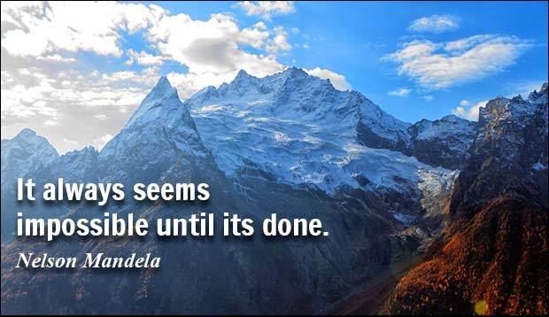
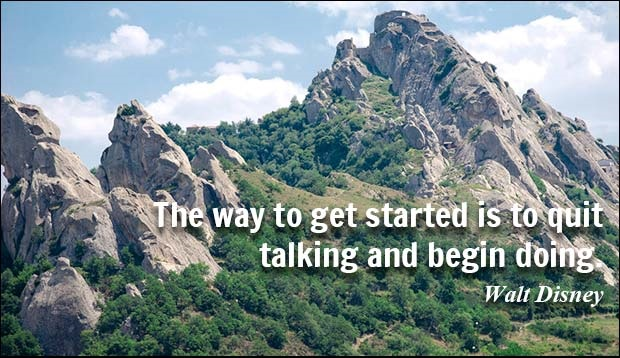
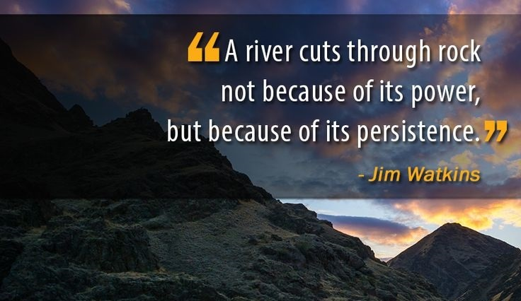

welcome to KaruPlaySchool



Students
There is only one corner of the universe you can be certain of improving and that's your own self. Small acts when multiplied by millions of people, can transform
the the world. It's easier to go down the hill but the view is much better at the top. Keep your eyes on the stars and your feet on the ground. Perfection is
not attainable but if we chase perfection we can catch excellence...